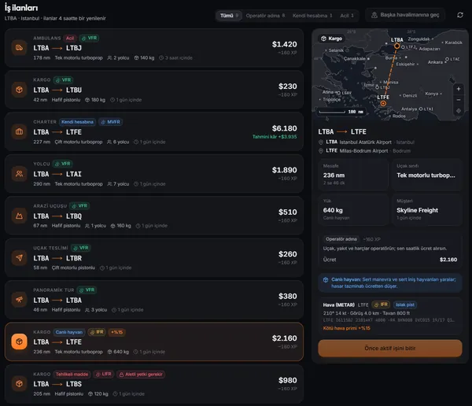
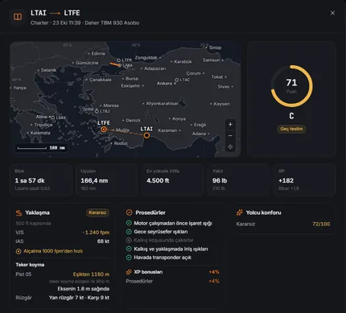

Microsoft Flight Simulator 2024 · 2020
MSFS 2024 kariyer kipiÜcretsiz, açık kaynak, her kuralı belgeli.
Öğrenci pilot olarak başlarsın; iş ilanlarından iş alır, sınav uçuşlarıyla lisans kazanır, kendi uçağını alırsın. Her uçuş simde hazırlanır, SimConnect ile takip edilir ve seyir defterine işlenir. MSFS 2020'de de çalışır.
Erken geliştirme (v0.1.0). Windows 10/11 x64 kurucusu. Doğrulama ve notlar
Hep ücretsiz. Beğendin mi? Pilota bir kahve ısmarla
- Fiyat
- Ücretsiz, GPL-3.0
- Simler
- MSFS 2024 ve MSFS 2020
- Çevrim içi
- Hesap yok, sunucu yok, çevrim dışı çalışır
- Sim bağlantısı
- Yerel TCP ile SimConnect, DLL yok
01 / Özellikler
Öğrenci pilottan havayolu kaptanına
İş ilanları, lisanslar, para ve seyir defteri; her uçuş senin için simde hazırlanır ve uçarken takip edilir.
- 01
Bulunduğun havalimanında iş ilanları
Kargo, yolcu, charter, uçak teslimi, arazi uçuşu, ambulans ve havayolu işleri; lisansına ve itibarına göre, rota haritasıyla. İlanlar 4 saatte bir yenilenir.
- 02
Otomatik uçuş hazırlığı
Gerekirse simi açar, simin kendi havalimanı verisinden park yeri seçer (ya da motorlar çalışır hâlde pist başına koyar), uçuşu ve rota planını yazar, uçağı taşır ve yükü yükler. Gerçek MSFS 2024'te denendi.
- 03
Uçuş takibi ve puan
Uçuş evreleri, iniş hızı ve temas anındaki G, sekme, aşırı hız, stall ve flap uyarıları ve hile tespiti: slew, ışınlanma ve havada yakıt ekleme.
- 04
Lisanslar ve sınav uçuşları
SPL, PPL ve CPL; ardından çok motor, aletli uçuş, helikopter, jet, ATPL, dar gövde ve geniş gövde tip yetkileri. Her biri saat, seviye ve ücret ister, sonra sınav uçuşu gelir.
- 05
Kazanmanın iki yolu
Operatör adına uç (uçak, yakıt ve harçlar onun; sen saatlik ücret alırsın) ya da CPL'den sonra kendi hesabına: kirayı, yakıtı ve iniş harcını sen ödersin, kâr senindir.
- 06
Seyir defteri, hangar ve finans
Her uçuş uçulan iziyle, iniş verisi, kesintileri ve ücretiyle. Uçak alıp satma, bakım ve yıpranma, zamana bağlı faizi olmayan kredi.
- 07
Sim içi araç çubuğu paneli
Rota, evre, kalan mesafe, tahmini varış, puan ve ücret MSFS 2020 ve 2024 araç çubuğunda; tam ekranda ve VR'da da.
- 08
Ana menüde kariyer sayfası
MSFS 2024'te simin kendi kutularının yanında bir Modstead Kariyer kutusu: simden çıkmadan iş al, uçağını (gerçek fotoğraflarıyla) seç ve uçuşu başlat.
- 09
Ücretsiz ve yerel
Abonelik, hesap ve çevrim içi sunucu yok. Kariyer verisi bilgisayarında düz JSON olarak durur; SimBrief bir tık uzakta.
Modstead uygulamasının içinde çalışır
Kariyer kipi ayrı bir eklenti değil, Windows için ücretsiz bir mod yöneticisi olan Modstead'in parçasıdır: verisi, kuralları ve sim bağlantısı uygulamadadır; kariyerin kendisi için simin içine bir şey kurulmaz. Araç çubuğu paneli ve ana menü kutusu, uygulamanın 127.0.0.1'de verdiğini gösteren isteğe bağlı paketlerdir. Uygulama kapalıyken uçuşlar takip edilmez, panel "Modstead bağlı değil" der ve kutu görünmez.
02 / Gerçekçilik
Öğütmesiz gerçekçilik
Simcilerin sevmediği şeyler belli: gizli ve sıfır toleranslı cezalar, öğütme ve gerçek zamanlı kilitler. Bu yüzden buradaki gerçekçilik gerçek prosedürlere ve kurallara dayanır; ama kurallar kısa toleranslarla uygulanır ve hiçbir şey seni gerçek zamanda bekletmez.
- Puan
- Yalnızca güvenlik için düşer
- Prosedürler
- Yalnızca XP bonusu verir (bonusların toplamı en çok +%20)
- Sim verisi
- Simin okuyamadığı şey sayılmaz
- İtiraz
- Kural kesintilerine, 7 gün içinde
- Yaklaşma
Kararlı yaklaşma ve teker koyma
1000 ft'te (aletli koşulda) ya da 500 ft'te (görerek) kararlı yaklaşma kapısı dikey hıza, yatışa, iniş takımına ve hıza bakar. Kararsız yaklaşmayla iniş 5 puan; pas geçmek kesinti almaz, bonus kazandırır. Teker koyma noktası pist eşiğine, teker koyma bölgesine ve eksene göre ölçülür; kuyruk sürtmesi ile azami kalkış ve iniş ağırlığı da sınırdır.
- Planlama
Uçuş kâğıdı
EASA yakıt politikasına göre yakıt (taksi, yol, ihtiyat, yedek meydan ve son yedek); IFR'de yedek meydan seçilir. Sıfır yakıt, kalkış ve iniş ağırlıkları sınırlarla karşılaştırılır; gereken pist yoğunluk irtifasıyla ve ıslak pistte uzar.
- Hava
Gerçek METAR
İş panosu ve aktif iş için aviationweather.gov'dan gözlemler. Varışı IFR ya da LIFR olan iş geçerli aletli yetki ve yeterlilik ister; yetkili pilota kötü hava primi (IFR %15, LIFR %25). Ağ yoksa hava bilinmiyor sayılır.
- Kabin
Yolcu konforu ve hassas yük
Konfor puanı değil bahşişi belirler: 90 ve üstü ücretin %8'i kadar bahşiş getirir. Kırılacak, canlı ve tıbbi yük yüksek G ve sert inişle hasar görür; tazminat ücretten düşer. Bozulabilir yükün teslim süresi dardır, tehlikeli madde ticari lisans ister.
- Sicil
Pilot sicili
Yolcu, gece ve aletli yeterlilik; geçerliliği lisansına ve yaşına bağlı sağlık sertifikası; görev süresi sınırları. Dinlenmek bir düğmedir (ana üs dışında otel parası); gerçek zamanlı bekleme yok. Hangi kuralların uygulanacağını zorluk belirler.
- Hangar
Bakım programı ve sigorta
Her uçak sınıfı için saate ya da aya bağlı muayeneler: 100 saatlik muayeneden A ve C bakımlarına, motor revizyonlarına kadar; muayenesi geçen uçak uçamaz. Gövde sigortası isteğe bağlıdır: uçuş saati başına prim, %5 muafiyet.
- Masraf
Bölgesel yakıt fiyatları ve ücretler
Bölgeye göre değişen ve haftadan haftaya oynayan yakıt fiyatları, Eurocontrol formülüyle seyrüsefer ücreti, yolcu ve kargo kilogramı başına yer hizmeti. Kendi hesabına işlerin teklifine girer; operatör adına işlerde operatör öder.
- Hava işi
Tur, paraşüt, hava fotoğrafı, arama-kurtarma
Ticari lisansla: panoramik turlar, paraşüt atlayışları, hava fotoğrafı ve arama-kurtarma. Hedefler uçuş planına nokta olarak girer; ücret tamamlanan hedeflerle orantılıdır, kısmen yapılan iş kısmen ödenir.
- Adil oyun
Başarımlar ve itiraz
Kariyerinden hesaplanan 24 başarım. Sim ya da eklenti hatasından doğan bir kesinti, uçuş ayrıntısında 7 gün içinde kaldırılabilir; puan, not, XP ve itibar yeniden hesaplanır, para asla değişmez.
Uygulamada
Örnek verilerle uygulama önizlemesi, Türkçe arayüz. Ekranın tamamı için görüntüyü seç.





MSFS 2024 ana menü sayfasında
Sim içi sayfanın, örnek verilerle tarayıcıdaki deneme düzeneğinde görüntüsü, Türkçe arayüz; simden alınmış bir görüntü değil.

Her maddenin eşikleri, toleransları ve formülleri: kariyer belgesi, Gerçekçilik.
03 / Ekran görüntüleri
Simde ve uygulamada
Gerçek ekran görüntüleri. Her grup görüntülerin nereden geldiğini söyler. Tam boyutta açmak için görüntüyü seç.
MSFS 2024 ana menüsü
MSFS 2024'ün (1.9.21.0) içinde, örnek bir kariyerle ve Türkçe arayüzle alındı.
Simin kendi kutularının yanındaki Modstead Kariyer kutusu dört sekmeli, tam ekran bir sayfa açar: aktif iş (pist ve rakımlarıyla rota şeridi, yük, yakıt, son teslim, uçak, kapıdan ya da pist başından başlangıç ve hazırlık denetimleri), iş ilanları, fotoğraflarıyla uçak seçimi ve pilot profili. Tuşlar simin kendi sayfalarındaki gibi çalışır, simin alt çubuğu sayfanın kendi kısayollarını gösterir. Kariyer → Panel'den kurulur: paket senin simindeki menü bileşeninden üretilir ve bir sim güncellemesi o bileşeni değiştirirse kendiliğinden kaldırılır.
- ESC kapat ya da geri
- Space seç
- Q E sekme değiştir
- yön tuşları ve oyun kolu


Sim içi araç çubuğu paneli
Panelin kendi kodunun, simin panel çerçevesi içinde benzetilmiş değerlerle tarayıcı önizlemesi; simden alınmış bir görüntü değil.

Uygulama
Örnek verilerle önizleme kipi. Görüntüler altyazının anlattığı bölüme kırpıldı; ekranın tamamı için görüntüyü seç.


04 / Nasıl çalışır
Bir kariyer uçuşu nasıl işler
Bir iş seç, simdeki hazırlığı uygulama yapar. Kontrol kapısı yeşile dönünce takip kendiliğinden kurulur.
İş seç
Bulunduğun havalimanındaki ilanlardan bir iş seç; uygulamada ya da MSFS 2024 ana menüsünde.
Uygulama uçuşu hazırlar
Gerekirse MSFS'i açar, uçağını uygun bir park yerine koyar, yükü yükler ve rota planını yazar. Sim uçuşu kendiliğinden yüklemezse kalkış havalimanında bir serbest uçuş aç ve Park yerine taşı'ya bas.
Kontrol kapısını geç
Sim bağlı, kalkış havalimanındasın, uçak doğru, slew kapalı. Motorları çalıştır; takip kendiliğinden başlar.
Uç ve in
Uygulama simi SimConnect ile saniyede yaklaşık 10 kez okur, uçuşu puanlar ve ücret, XP ve itibarla seyir defterine yazar.
Uygulama SimConnect ağ protokolünü yerel TCP üzerinden kendisi konuşur; SimConnect.dll taşınmaz ve sime hiçbir şey enjekte edilmez. MSFS 2024 bu portu öntanımlı açar; MSFS 2020 SimConnect.xml'de yerel bir IPv4 girişi ister (nasıl).

05 / Kurallar ve puan
Açık kurallar: her kesintinin üst sınırı var
Her kuralın, ücretin ve kesintinin formülü belgelidir. Puan parayı değil, XP ve itibarı belirler; hatalı bir kesinti cebini yakmaz.
| Kural | Kesinti | Üst sınır |
|---|---|---|
| Aşırı hız | 5 | 15 |
| Stall uyarısı (150 ft AGL üstü) | 5 | 15 |
| Flap hız sınırı | 3 | 9 |
| Yatış > 45° (jet 35°) | 3 | 9 |
| Yunuslama > 25° / < −15° | 3 | 9 |
| G > 2,5 ya da < −1 | 5 | 10 |
| 10.000 ft altında > 265 kt (türbinli) | 5 | 10 |
| Yere yakın (1000 ft altı) yatış > 30° | 3 | 6 |
| Pist dışında 3 sn'den uzun > 30 kt taksi | 2 | 6 |
| Sekme | 4 | 12 |
| Son yedekten az yakıtla iniş (pistonlu 45, türbin 30, helikopter 20 dk) | 5 | 5 |
| Kararsız yaklaşmayla iniş | 5 | 5 |
| Kuyruk sürtmesi (jet yolcu uçakları: bölgesel 10,5°, dar gövde 11°, geniş gövde 10°) | 10 | 10 |
| Eşikten önce teker koyma | 8 | 8 |
| Uzun iniş (teker koyma bölgesi + 150 m ötesi) | 3 | 3 |
| Eksenden sapma (pist yarı genişliği − 4 m) | 2 | 2 |
| Azami kalkış / iniş ağırlığı aşıldı | 5 + 5 | 5 + 5 |
| Aletli yetki ya da yeterlilik olmadan 30 sn'den uzun bulut/düşük görüş | 10 | 10 |
| Basınçsız kabinde 12.500 ft üstü 30 dk'dan uzun ya da 15.000 ft üstü (FAA 91.211) | 5 | 10 |
| İniş sertliğiSınıfa göre ölçekli. Hafif uçak: < 200 fpm 0 · 200–300: 3 · 300–400: 8 · 400–500: 15 · ≥ 500: 25 | ||
| İniş G'si ve yatışıG > 1,5: 5 · > 2,0: 10; yatış > 6°: 5 · > 10°: 10 | ||
- Puan parayı değil, XP ve itibarı belirlerPara yalnızca gerçek olaylardan etkilenir: gecikme, hasar, yakıt ve kira.
- Notlar
- A+ ≥ 95
- A ≥ 88
- B ≥ 78
- C ≥ 65
- D ≥ 50
- F
- Geçersiz uçuşlarHavada slew, ışınlanma ya da faz atlama, havada yakıt ekleme, havada başlayan uçuş ya da kaza: puan 0, ücret yok; kazada itibar −15.
- İtirazSim ya da eklenti hatasından doğan bir kural kesintisi 7 gün içinde kaldırılabilir. Para değişmez; geçersiz uçuşa itiraz edilemez.
- Sınav uçuşlarıVarış havalimanına ulaş, en az 75 puan al (Kolay 65, Gerçekçi 85) ve en fazla "sert" in. Sınav ücreti geçilemese de ödenir.
- Adil sim hızıLisans saati blok süresidir ama gerçek sürenin 1,5 katını geçemez; sim hızıyla saat biriktirilemez.
| Lisans | Önce | Saat | Seviye | Ücret | Açtığı |
|---|---|---|---|---|---|
| SPL Öğrenci pilot | — | — | 1 | — | eğitim uçuşları |
| PPL Özel pilot lisansı | SPL | 3 | 2 | 800 $ | kargo, uçak teslimi, arazi |
| CPL Ticari pilot lisansı | PPL | 15 | 5 | 2.500 $ | yolcu, charter, ambulans, tek turboprop, kendi hesabına iş, uçak sahipliği, kredi |
| ME Çok motor yetkisi | PPL | 8 | 3 | 1.500 $ | çift motorlular |
| IR Aletli uçuş yetkisi | PPL | 10 | 4 | 2.000 $ | jetlerin şartı |
| H Helikopter yetkisi | PPL | 5 | 3 | 3.500 $ | helikopter |
| JET Jet tip yetkisi | CPL, IR | 30 | 8 | 6.000 $ | iş jetleri |
| ATPL Havayolu taşımacı pilot lisansı | CPL, ME, IR | 60 | 12 | 8.000 $ | tarifeli seferler |
| TR-N Dar gövde tip yetkisi | ATPL, JET | 100 | 16 | 15.000 $ | A320, 737 |
| TR-W Geniş gövde tip yetkisi | TR-N | 200 | 22 | 30.000 $ | 787, 777, A350 |
Ücret, XP, seviye, itibar, hasar ve kredinin tam formülleri: kariyer belgesi, Kurallar ve formüller.
06 / Karşılaştırma
OnAir, NeoFly ve FSEconomy ile karşılaştırma
Benzer alanı kapsar (iş, ekonomi, lisans ve seyir defteri) ama ücretsiz, açık kaynak ve tamamen yereldir: abonelik, hesap ve çevrim içi sunucu yok, her formül belgeli. Ortak bir çevrim içi dünyası ya da çok oyunculu ekonomisi yoktur.
| Ürün | Güçlü yanı | Zayıf yanı |
|---|---|---|
| OnAir Company | En derin ekonomi; açık formüller (el kitabı); serbest → şirket aşaması | Abonelik, sürekli çevrim içi zorunluluğu, sunucu kesintileri |
| NeoFly 4 | 18 görev türü, son tarih yok, yolcu ve kargo birlikte | Yüksek masraflar, acımasız yeterlik uçuşları |
| FSEconomy | Ortak, kalıcı dünya; 30/48 kuralı (48 saatte en çok 30 sim saati) | Eski arayüz |
| Bu kariyer kipi | Ücretsiz ve yerel; her formül belgeli; uçuşu senin için simde hazırlar | Ortak çevrim içi dünya ya da çok oyunculu ekonomi yok; erken geliştirme; yalnızca Windows |
Onlardan ne aldı
- Kontrol kapısı (OnAir): zorunlu kontroller yeşile dönünce takip kendiliğinden kurulur.
- Açık formüller (OnAir el kitabı, A Pilot's Life kılavuzu): her kural uygulamada ve belgede yazar.
- Puan parayı değil, XP ve itibarı belirler (OnAir).
- Korunan ilk aşama: operatör adına işlerde masraf yoktur; kendi hesabına işler CPL'den sonra açılır.
- Kısa uçuş eki: yarım saatlik oturumlar da kazandırır.
- Pilot puanı (A Pilot's Life): son 10 uçuşun ortalaması ile tüm uçuşların ortalamasının ortası.
- Sınav uçuşuyla lisans (A Pilot's Life, Air Hauler 2, MSFS 2024).
- Adil sim hızı, FSEconomy ve OnAir ruhuyla.
Tam araştırma tablosu: A Pilot's Life 2, Air Hauler 2, Volanta, smartCARS ve MSFS 2024'ün kendi kariyeri dahil.
07 / İndir
Windows için indir
Kariyer kipi Modstead uygulamasıyla gelir. Windows 10 ya da 11'e (x64) kur ya da kaynaktan derle.
Erken geliştirme sürümü. Pürüzler olabilir; kurallar, SimConnect protokolü ve iş akışı otomatik testlerle denetleniyor ama her şey henüz uçuşta denenmedi.
- Açıkta derlenirKurucu, herkese açık kaynak koddan GitHub Actions'ta derlenir.
- İndirmeyi doğrulaHer sürümde bir
SHA256SUMS.txtvardır. PowerShell'deGet-FileHash .\Modstead-setup-x64.exe -Algorithm SHA256çalıştır ve çıkan özeti o dosyadakiyle karşılaştır. - SmartScreen uyarısıKurucu kodla imzalanmadığı için Windows SmartScreen "Bilinmeyen yayıncı" uyarısı gösterebilir. Ek bilgi'yi, ardından Yine de çalıştır'ı seç.
Kurduktan sonra
- Uygulamayı aç, MSFS → Kariyer'e git ve pilotunu kaydet: ad, çağrı kodu, ana üs, zorluk ve başlangıç rütbesi.
- İsteğe bağlı: araç çubuğu panelini ve ana menü kutusunu, simler kapalıyken Kariyer → Panel'den kur.
- Yalnızca MSFS 2020:
SimConnect.xml'e yerel bir IPv4 girişi ekle (SSS'ye bak).
Kaynaktan derle
- Node.js 22+
- Rust 1.85+ (MSVC)
- Microsoft Edge WebView2
git clone https://github.com/azorkai/modstead.git
cd modstead
# sabit sürümler, kurulum betikleri kapalı
npm install
# masaüstü uygulaması (geliştirme) ya da NSIS kurucusu
npm run app:dev
npm run app:buildYalnızca bakmak mı istiyorsun? npm run dev arayüzü tarayıcıda örnek verilerle açar; kariyer sayfası için adrese ?view=game:msfs:career ekle.
Modstead'e destek ol
Pilota bir kahve ısmarla
Modstead ve kariyer kipi ücretsiz ve açık kaynak: reklam yok, hesap yok, abonelik yok. Uçuşlarını daha keyifli hale getirdiyse bir kahve, güncellemelerin sürmesine yakıt olur.
Başka yollar: depoya yıldız ver · hata bildir ya da özellik öner.
08 / SSS
Sık sorulan sorular
Bu kariyer kipi ücretsiz mi?
Evet. GPL-3.0 lisansıyla ücretsiz ve açık kaynaklı olan Modstead'in parçasıdır. Abonelik ve hesap yoktur.
Nasıl kurarım?
Windows 10/11 (x64) kurucusunu GitHub Releases'tan indir ya da uygulamayı kaynaktan derle. Kariyer kipi Modstead uygulamasının parçasıdır: MSFS'i, ardından Kariyer'i aç ve bir pilot kaydet. Bkz. İndir.
MSFS 2020 ile çalışır mı?
Evet, tek bir kurulum adımıyla. MSFS 2024 yerel bir IPv4 SimConnect portunu öntanımlı açar; MSFS 2020 yalnızca adlandırılmış boru açar. Simin ayar klasöründeki (UserCfg.opt dosyasının bulunduğu klasör) SimConnect.xml'e, var olan <SimConnect.Comm> girişlerinin yanına MSFS 2024'ün yazdığına benzer bir blok ekle ve simi yeniden başlat:
<SimConnect.Comm>
<Descr>Static IP4 port</Descr>
<Protocol>IPv4</Protocol>
<Scope>local</Scope>
<Port>500</Port>
</SimConnect.Comm>Modstead portu bu dosyadan okur ve dosyayı asla kendisi değiştirmez.
MSFS 2024'ün kendi kariyerinin yerine mi geçer?
Hayır, onun yanında çalışır. Simde serbest uçuşları kullanır; kendi kariyerini, lisanslarını ve seyir defterini Modstead'de tutar.
OnAir, NeoFly ya da FSEconomy'ye alternatif mi?
Benzer alanı (iş, ekonomi, lisans ve seyir defteri) farklı bir odakla kapsar: her şey yerel ve belgelidir, abonelik ya da sunucu yoktur. Ortak bir çevrim içi dünyası ya da çok oyunculu ekonomisi yoktur. Karşılaştırmaya bak.
Ne kadar gerçekçi?
Gerçek prosedürlere ve kurallara dayanır ama öğütmez: kararlı yaklaşma kapısı, piste göre teker koyma noktası, EASA yakıt politikasıyla uçuş kâğıdı, gerçek METAR, pilot yeterliliği, sağlık sertifikası ve görev süresi, bakım programları. Puan yalnızca güvenlik için düşer, prosedürler yalnızca XP bonusu verir, simin okuyamadığı şey sayılmaz ve bir kural kesintisine 7 gün içinde itiraz edilebilir. Dinlenmek bir düğmedir, gerçek zamanlı bekleme yoktur. Gerçekçiliğe bak.
İnternet bağlantısı gerekir mi?
Hayır. İşler yerelde üretilir ve kariyer verisi bilgisayarında kalır. Gerçek METAR ve SimBrief'i açmak internet kullanır; ağ yoksa hava bilinmiyor sayılır.
Sime bir şey kurar mı?
Kariyerin kendisi için hayır. Araç çubuğu paneli (MSFS 2020 ve 2024) ve ana menü kutusu (MSFS 2024) isteğe bağlıdır ve diğer modlar gibi Community klasörüne, Kariyer → Panel'den kurulur. İkisi de yalnızca Modstead'in 127.0.0.1'de verdiğini gösterir; Modstead kapalıyken panel bunu söyler ve kutu görünmez.
Kariyeri simden çıkmadan kullanabilir miyim?
MSFS 2024'te günlük döngü için evet: ana menü sayfasında iş alır, uçak seçer ve uçuşu başlatırsın; araç çubuğu paneli uçuşu izler. Modstead'in yine de bilgisayarda açık olması gerekir. Uçak alımı, lisanslar, kredi ve seyir defterinin tamamı Modstead uygulamasındadır.
Modstead uygulaması kapalıyken çalışır mı?
Hayır. Kariyerin verisi, kuralları ve sim bağlantısı uygulamadadır. Uygulama kapalıyken uçuşlar takip edilmez, araç çubuğu paneli "Modstead bağlı değil" der ve ana menü kutusu görünmez.
Hangi uçaklarla uçabilirim?
Simde kurulu her uçakla. Modstead uçağı simin verdiği değerlerden (ya da adından) hafif pistonlu, tek turboprop ya da dar gövde jet gibi bir sınıfa ayırır; sınıfı elle değiştirebilirsin. Kendi EFB'si olan uçaklarda (PMDG, Fenix, iniBuilds, FBW) Modstead yükü yazmaz, plan değerlerini gösterir.